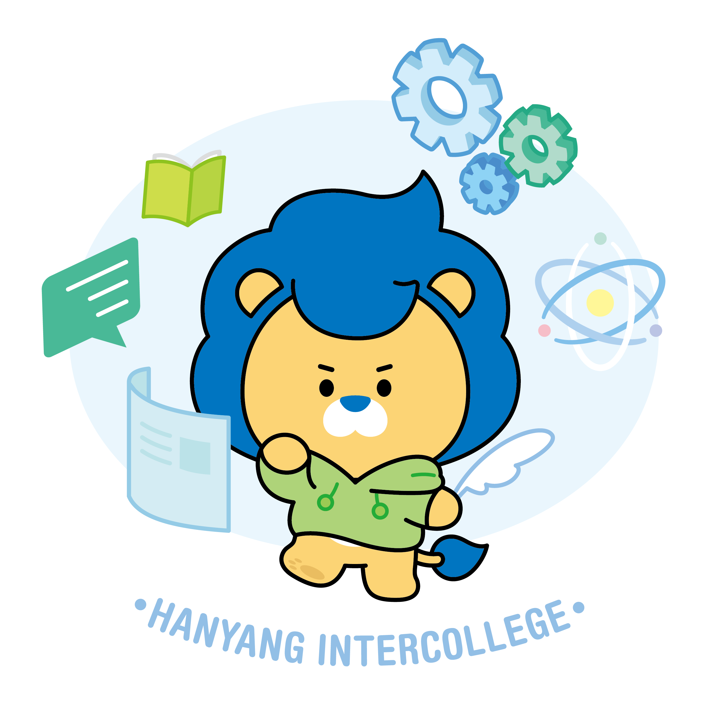

Hanyang Intercollege 전공선택 관련 FAQ
전공 선택 · 다(부)전공 · MSC · 전공기초필수 · 프로젝트 · 졸업요건 등 핵심 질의응답을 검색하세요.
● 안내
이 FAQ는 아래 전공선택 및 전공선택 후 졸업요건 관련 안내문을 바탕으로 2025학번 한정으로
키워드 기반 검색으로 제공됩니다.
이 FAQ는 아래 전공선택 및 전공선택 후 졸업요건 관련 안내문을 바탕으로 2025학번 한정으로
키워드 기반 검색으로 제공됩니다.
● 주의사항
반드시 위 두 안내문을 먼저 읽고 검색해 주세요.
반드시 위 두 안내문을 먼저 읽고 검색해 주세요.
원하는 내용이 검색되지 않거나 추가로 전공선택과 관련하여 궁금한 사항이 있으신 경우, intercollege@hanyang.ac.kr로 문의해 주세요.
